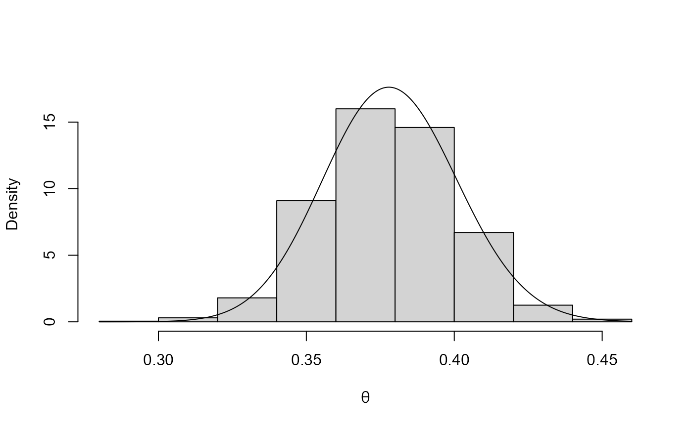

Uses the rust package to simulate from the posterior
distribution of the extremal index \(\theta\) based on the K-gaps model
for threshold interexceedance times of Suveges and Davison (2010).
kgaps_post( data, thresh, k = 1, n = 1000, inc_cens = FALSE, alpha = 1, beta = 1, param = c("logit", "theta"), use_rcpp = TRUE )
| data | A numeric vector of raw data. No missing values are allowed. |
|---|---|
| thresh | A numeric scalar. Extreme value threshold applied to data. |
| k | A numeric scalar. Run parameter \(K\), as defined in Suveges and
Davison (2010). Threshold inter-exceedances times that are not larger
than |
| n | A numeric scalar. The size of posterior sample required. |
| inc_cens | A logical scalar indicating whether or not to include contributions from censored inter-exceedance times relating to the first and last observation. See Attalides (2015) for details. |
| alpha, beta | Positive numeric scalars. Parameters of a beta(\(\alpha\), \(\beta\)) prior for \(\theta\). |
| param | A character scalar. If |
| use_rcpp | A logical scalar. If |
An object (list) of class "evpost", which has the same
structure as an object of class "ru" returned from
ru.
In addition this list contains
model: The character scalar "kgaps".
thresh: The argument thresh.
ss: The sufficient statistics for the K-gaps likelihood,
as calculated by kgaps_stats.
A beta(\(\alpha\), \(\beta\)) prior distribution is used for
\(\theta\) so that the posterior from which values are simulated is
proportional to
$$\theta ^ {2 N_1 + \alpha - 1} (1 - \theta) ^ {N_0 + \beta - 1}
\exp\{- \theta q (S_0 + \cdots + S_N)\}.$$
See kgaps_stats for a description of the variables
involved in the contribution of the likelihood to this expression.
The ru function in the rust
package simulates from this posterior distribution using the
generalised ratio-of-uniforms distribution. To improve the probability
of acceptance, and to ensure that the simulation will work even in
extreme cases where the posterior density of \(\theta\) is unbounded as
\(\theta\) approaches 0 or 1, we simulate from the posterior
distribution of
\(\phi = \log(\theta / (1-\theta))\)
and then transform back to the \(\theta\)-scale.
Suveges, M. and Davison, A. C. (2010) Model misspecification in peaks over threshold analysis, The Annals of Applied Statistics, 4(1), 203-221. https://doi.org/10.1214/09-AOAS292
Attalides, N. (2015) Threshold-based extreme value modelling, PhD thesis, University College London.
kgaps_mle for maximum likelihood estimation of the
extremal index \(\theta\) using the K-gaps model.
kgaps_stats for the calculation of sufficient
statistics for the K-gaps model.
ru for the form of the object returned by
kgaps_post.
